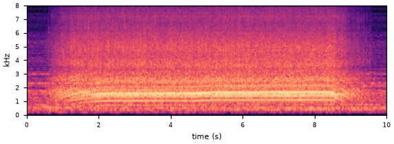
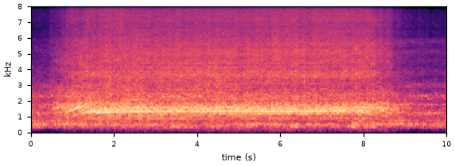
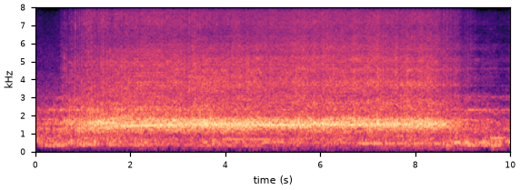
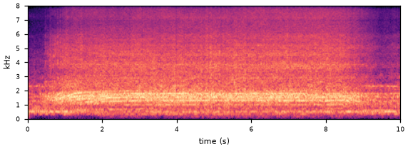
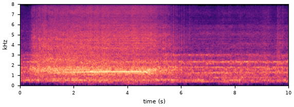

1The model
One shared backbone feeds two classifiers. Classifier 1 learns normal vs faulty. Classifier 2 tries to tell real recordings from AudioGen-generated ones, but it sits behind a gradient-reversal layer (GRL). The GRL flips the sign of classifier 2's gradient before it reaches the backbone, so while classifier 2 learns to spot synthetic clips, the backbone is pushed to hide that difference.
Classifier 1
Small MLP (768 → 128 → 1). Trained on real + synthetic normals (label normal) vs synthetic faulty clips (label faulty), with the two classes weighted equally.
Classifier 2
Same size MLP. Trained on real normals (label real) vs synthetic normal and faulty clips (label synthetic). Real and synthetic each make up half of every batch.
GRL strength λ
Standard schedule from Ganin et al. (2016): λ rises smoothly from 0 to 1 as λ = 2 / (1 + e−10p) − 1, where p is the fraction of training done. It reaches 0.99 halfway through.
2Data
All real data is ToyCar from the DCASE 2026 Task 2 development set, using the near-minus-far signal.
Synthetic clips come from AudioGen-medium fine-tuned on the 1,000 real ToyCar training normals (a LoRA adapter plus a
learned <toycar> word), generated in 10 s clips. No real anomalies are used for training or for
choosing settings; the real test labels are used only to report scores.
Text prompts used for generation
| Class | Prompt | Clips |
|---|---|---|
| Normal | “the sound of <toycar>” | 946 |
| Faulty | “a broken <toycar> with subtle deviations from a working <toycar>” | 1,006 split evenly |
| Faulty | “a <toycar> with a faint intermittent rattle” | |
| Faulty | “a <toycar> with a slightly worn, grinding gear” |
Sampling: classifier-free guidance 3, top-k 250, 10 s per clip. The earlier GRL runs used 250 normal + 250 faulty clips from the same generator (200 + 200 for training).
Listen
Loudness-normalised to the same level so the clips can be compared by ear.





3Training
| Setting | Value |
|---|---|
| Backbone | BEATs (iter3, 90M parameters) frozen, LoRA rank 8 on the attention and feed-forward layers of all 12 blocks: 1.18M trainable parameters |
| Input | Full 10 s clips with a random circular time shift (same length as at test time) |
| Batch | 32 clips per step: 16 real normal + 8 synthetic normal + 8 synthetic faulty |
| Steps | 1,000 steps (~1.05 s each, about 18 minutes on one GPU), λ schedule over the 1,000 steps |
| Optimiser | AdamW, learning rate 1e-4 for LoRA, 1e-3 for both classifiers, weight decay 0.01 |
| Seeds | One run (seed 0) |
| Checks every 250 steps | Official score on the real test set; normal vs faulty AUC on the 100 held-out synthetic clips; classifier 2's accuracy; and four fresh probes (below) |
What the probes measure
Classifier 2 can be fooled without the gap actually closing, so at every check we train four new, independent classifiers on the backbone's features: logistic regression, an RBF-kernel SVM, a small MLP and k-nearest neighbours. Each one tries to separate real normal clips from synthetic normal clips (5-fold cross-validation AUC). 1.0 means they are perfectly separable; 0.5 means the two cannot be told apart, which is the goal. A fifth probe checks that real normal vs real anomalous clips stay separable (higher is better).
4Results
Official score on the real test set during training
Every check of this run
| Step | λ | Loss, classifier 1 | Loss, classifier 2 | Source AUC | Target AUC | pAUC | Official | Held-out synthetic AUC | Classifier 2 accuracy | Probes: real vs synthetic normal | Probe: real normal vs anomaly |
|---|---|---|---|---|---|---|---|---|---|---|---|
| 0 | 0 | – | – | – | – | – | – | – | – | 1.000 | 0.828 |
| 250 | 0.85 | 0.219 | 0.000 | 0.435 | 0.483 | 0.483 | 0.466 | 0.860 | 1.000 | 1.000 | 0.833 |
| 500 | 0.99 | 0.239 | 0.001 | 0.445 | 0.485 | 0.496 | 0.474 | 0.936 | 1.000 | 1.000 | 0.841 |
| 750 | 1.00 | 0.340 | 0.000 | 0.492 | 0.529 | 0.506 | 0.509 | 0.956 | 1.000 | 1.000 | 0.832 |
| 1,000 | 1.00 | 0.208 | 0.000 | 0.503 | 0.553 | 0.512 | 0.522 | 0.964 | 1.000 | 1.000 | 0.821 |
Losses are averages over the 50 steps before each check. “Probes: real vs synthetic normal” is 1.000 for all four probes (logistic regression, RBF-SVM, MLP, kNN) at every check. Step 0 is the pretrained backbone before any training.
5Takeaways
The GRL does not close the gap, even with 4× the data. Classifier 2 stays at 100% accuracy and its loss near zero for the whole run, even at full λ = 1. The four fresh probes also stay at 1.000, the same as before training.
Classifier 1 learns the synthetic faults well, but this barely reaches real ones. Held-out synthetic AUC rose to 0.964 (from 0.918 with less data), while the real-test score ended at 0.522, close to the earlier run's 0.519 and only a little above chance.
The backbone still holds the real fault information. A probe separates real normal from real anomalous clips at 0.82–0.84 throughout, so training did not damage it; classifier 1 just does not use that information, because it learns AudioGen's version of a fault.
Caveats: one seed, 1,000 steps. The two runs also differ in clip length (10 s vs 5 s crops) and number of steps, not only in the amount of synthetic data.